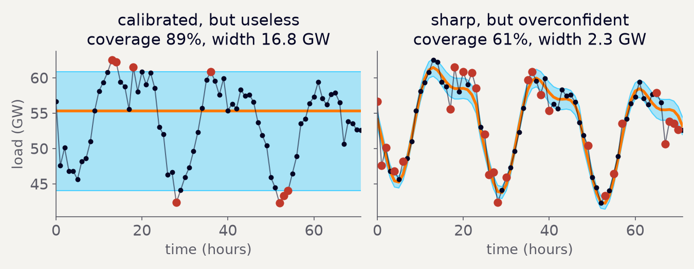
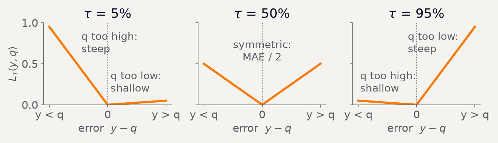
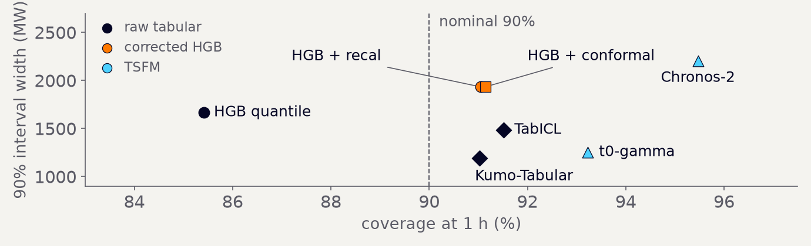
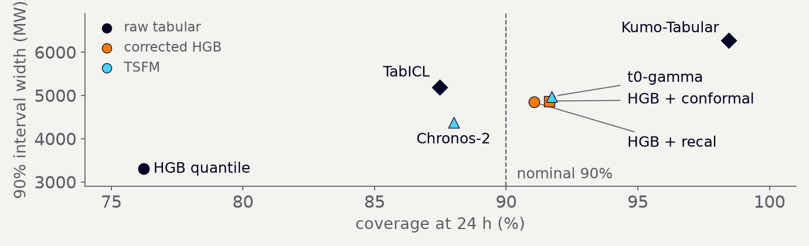
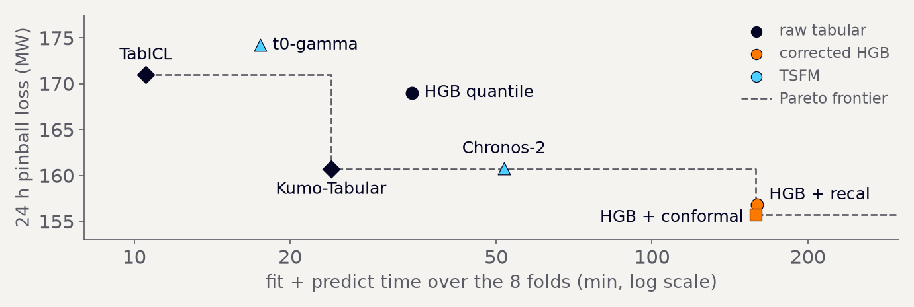
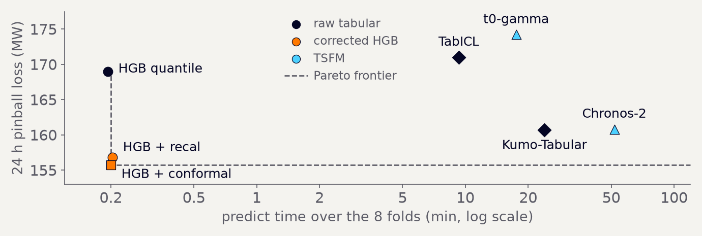
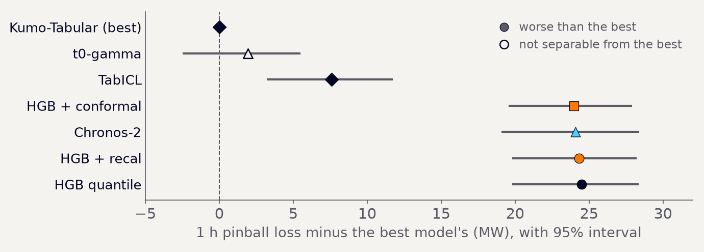
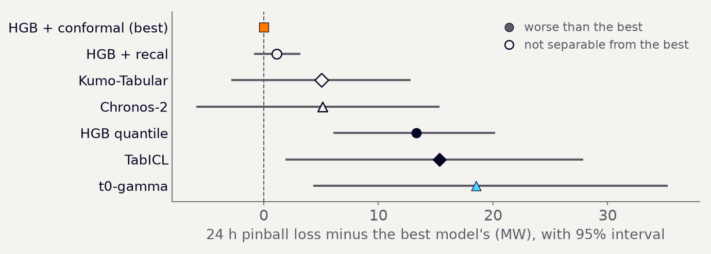
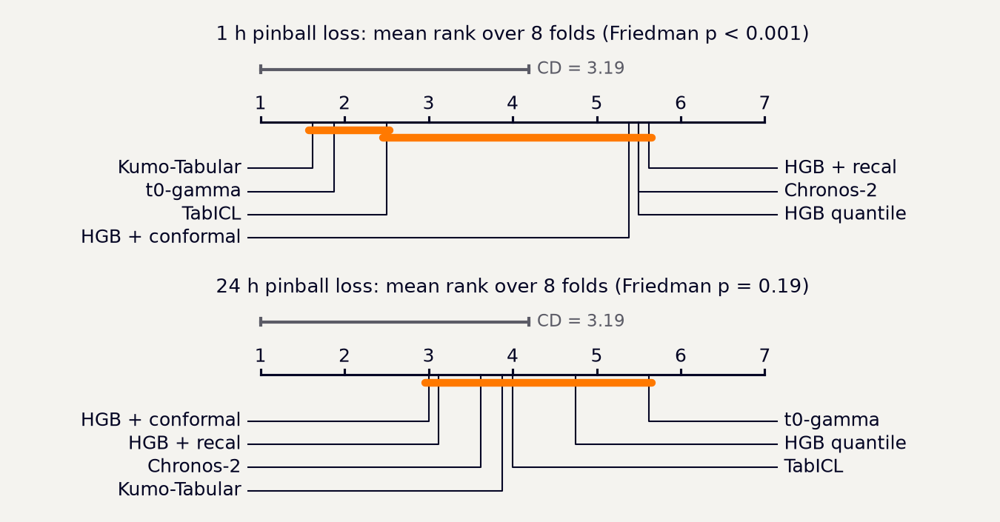

class: dark, middle, title-slide # TabICL vs scikit-learn for predictive uncertainty quantification <div class="authors"> Olivier Grisel & Jérôme Dockès<br/> <span class="sub">Probabl, the Tabular AI company</span> </div> <div class="tagline">Compute! Paris 2026 · 25 November 2026</div> ??? - 30 min slot (10:50-11:20, Auditorium, track "Models on Trial"): aim for ~22-25 min of talk, leave room for questions. - Jérôme ran the case study; I present it. Say that out loud. - The title stays as accepted on pretalx, even though the study now also covers Kumo, Chronos-2 and t0-gamma. --- ## Who did what .cols[ .left-column[ - **Jérôme Dockès**: designed and ran the electricity load forecasting case study (scikit-learn, skrub, skore, TabICL, Kumo, Chronos-2, t0-gamma) - **Olivier Grisel**: presenting; machine learning engineer and scikit-learn contributor - Both at **Probabl**, *the Tabular AI company*: scikit-learn, skrub, skore ] .right-column[ .center[ .small[These slides] ] ] ] .small[ Case study: [probabl-ai.github.io/skore-example-electricity-load](https://probabl-ai.github.io/skore-example-electricity-load/) · [github.com/probabl-ai/skore-example-electricity-load](https://github.com/probabl-ai/skore-example-electricity-load) ] ??? - TODO: confirm roles and wording for Jérôme's bio line. - Mention the case study is public and reproducible; every report on the index page has full provenance. - The QR code opens the hosted deck: https://ogrisel.github.io/tfm_vs_classical_ml_predictive_uncertainty/ Generated with segno (error correction M) into slides/assets/slides-qr.png. --- ## The question > Tabular and time series foundation models (TFMs and TSFMs) > are *advertised* as giving well calibrated probabilistic predictions out of > the box. **Is that true?** Compared with a classical scikit-learn pipeline? And at what cost? - Simplicity of development - Accuracy of the median forecast - Calibration **and** sharpness of the 5-95% interval - Computational cost, fit and predict ??? - Straight from the abstract and the updated description: a time series forecasting problem, a grid of probabilistic regressions over horizons, tabular models (scikit-learn, TFMs) and TSFMs compared with time-structured features. --- ## The contenders | Model | Family | Output | Inputs | | --- | --- | --- | --- | | HGB mean | scikit-learn | mean | feature table | | HGB quantile | scikit-learn | 5 / 50 / 95% | feature table | | HGB quantile + recal / conformal | scikit-learn | 5 / 50 / 95% | feature table | | TabICL | TFM | mean, 5 / 50 / 95% | feature table | | Kumo-Tabular | TFM | mean, 5 / 50 / 95% | feature table | | Chronos-2 | TSFM | mean, 5 / 50 / 95% | history window (4000 h) + future covariates | | t0-gamma | TSFM | mean, 5 / 50 / 95% | history window + future covariates | | *RTE day-ahead* (baseline) | grid operator | point only, 24 h | proprietary | ??? - Sources: scripts/model_comparison/README.md and model_registry.py in the case study. - Chronos-2 is `amazon/chronos-2`; t0-gamma is `theforecastingcompany/t0-gamma` from The Forecasting Company; Kumo models come from `structured-data-models`. - Context length: Chronos-2 4000 h (from the run tag `chronos2_ctx4000`). - Recalibration and conformal correction are two post-hoc ways to fix the coverage of the raw HGB quantiles, both fitted on inner walk-forward folds. - The baseline is the ENTSO-E day-ahead load forecast for France, published by RTE, the grid operator. It is scored on the same test rows, at the 24 h horizon only. It is the number to beat to claim usefulness in operations. - TODO: check the wording on which models are open weights, as the abstract says "open source & weights". --- ## Tabular foundation models in a nutshell - **Pretrained once** on millions of **synthetic tables**, not on our data - **Small to medium data** (below ~10k rows): TFMs are usually **stronger** than classical models; the **gap often shrinks** as the number of rows grows - **In-context learning**: `fit` only stores the training table; `predict` passes the **training rows and the test rows** through a transformer in one forward pass, with **no gradient step** - We use the **defaults**, no tuning, with an **ensemble of 8** members - The cost moves to **predict**: a **GPU** helps .tight[ | | TabICL | Kumo-Tabular | | --- | --- | --- | | Package | `tabicl` (open source, with pre-training) | `structured-data-models` (NVIDIA) | | Paper | Qu et al., ICML 2025; v2 at ICML 2026 | Qu et al., 2026 preprint | | Class used | `TabICLRegressor` | `sdm.models.KumoTabular` (large) | ] ??? - Sources: the READMEs of github.com/soda-inria/tabicl and github.com/NVIDIA/structured-data-models, and the wrappers in src/electricity_load_forecasting/tabicl.py and kumotabular.py of the case study. - Pretraining: the TabICL README says it is pretrained on millions of synthetic datasets (v2: 300 to 48K training rows, 2 to 100 columns) and that its pretraining code is open. The sdm README lists "SCM priors for KumoTabular" among its synthetic data generators, so Kumo-Tabular is also pretrained on synthetic data. I did not check Kumo's pretraining details beyond that. - Row count: the usual pattern is that TFMs beat classical models on small to medium tables (below ~10k rows), and that the gap shrinks with more rows. This is a general claim from the TFM literature that I have not checked against the TabICL or TabFM papers for the exact breakpoint. The study does not vary the number of rows, so it cannot show the shrinking. - Training size in this study: every tabular model trains on all the rows of its fold, so the comparison is row-matched. Every training set spans at least 730 days of hourly data (`min_train_days=730`, so at least 17,520 rows), above the ~10k rows of the claim. The `max_train_rows: 9000` that appears in the HGB run metadata is only the default of the `--max_train_rows` option of cross_validate_models.py, recorded in the metadata: the HGB branches of that script never pass it to `make_data_op`, whose default is no cap. TabICL and Kumo-Tabular were run with `--max_train_rows 0`, which is also no cap. I first read that metadata as a cap on HGB, which was wrong. - In-context learning: TabICL does `fit` and `predict` jointly in a single forward pass of a pretrained transformer. Our wrappers' `fit` just stores (X, y); `predict` runs the transformer with the training table as context. No gradient step, no per-dataset training. - The cost moves to predict: the measured predict times are on the cost slide (TabICL 558 s against 12 s for HGB quantile, over the 8 folds, 24 h). KV caching can move part of it back to `fit` in both libraries; we did not use it. - Ensemble: `n_estimators=8` for both (pipeline.py, `make_data_op`). For TabICL the members are differently permuted and normalised views of the same table. I did not check what the members are for Kumo-Tabular. - Quantiles: TabICL returns the requested levels (`output_type="quantiles"`, our alphas are 0.05, 0.5, 0.95); Kumo-Tabular always returns q001 to q999, and our wrapper picks the three levels and sorts them. - Kumo-Tabular: `size="large"`, class `sdm.models.KumoTabular`, paper "NVIDIA Kumo Tabular: Pushing the Accuracy-Efficiency Frontier for Tabular Prediction". The case study pins a commit of the NVIDIA repository. TabICL: the version of the checkpoint depends on the installed `tabicl` (the current README defaults to TabICLv2); check before saying "v2". --- ## Forecasting as multi-horizon regression - **Load**: hourly French total load, 2021 to 2025, from ENTSO-E - **Weather**: 10 French cities, day-1 and day-2 **forecasts**, not observations - Predict the load **1 h, 12 h and 24 h** ahead, with one model per horizon - **Walk-forward CV**, 8 folds, with a gap between train and test; test dates are identical for every model - Tabular models get a **feature table** built by the shared skrub pipeline - TSFMs get the **history window** and the future covariates directly ??? - Load source: ENTSO-E Transparency, "Total Load - Day Ahead / Actual", bidding zone France, hourly UTC, exported by hand (datasets/README.md in the case study). The same file has the **day-ahead total load forecast** published by RTE, the grid operator: that is the baseline on the point and pinball slides. - Weather source: Open-Meteo. Historical data for the 10 cities; the day-1 and day-2 files are the GFS 2 m temperature forecasts issued 24 h and 48 h before the valid time (the Previous Runs API, JMA GSM fills gaps in the GFS archive). Open-Meteo is CC BY 4.0, free tier for non-commercial use (datasets/README.md; scripts/fetch_weather_forecasts.py). - Coverage: load 2021 to 2025; weather from 2021-01-01 to 2025-05-31 (datasets/README.md). - Source for the pipeline: src/electricity_load_forecasting/pipeline.py (`make_data_op`) and splitter.py in the case study. - Same scoring for all models, so reports are comparable. --- background-image: url(assets/ts_features/frame_01.png) background-position: center background-repeat: no-repeat background-size: 100% 100% ??? - Start from the hourly load. Raw material: the national load, one row per hour (`resample`). Point at the daily double peak and at the weekend dip: that is what the lags will exploit. --- background-image: url(assets/ts_features/frame_02.png) background-position: center background-repeat: no-repeat background-size: 100% 100% ??? - Pick a prediction time and a horizon. One row of the training table = one prediction time p. The target is `load_mw.shift(-h)`. We repeat the construction for h = 1, 12 and 24 h. --- background-image: url(assets/ts_features/frame_03.png) background-position: center background-repeat: no-repeat background-size: 100% 100% ??? - Calendar features of the target time. 5 features computed on the *target* time, in Europe/Paris time: hour of day, day of week, day of year, year and public holiday flag. --- background-image: url(assets/ts_features/frame_04.png) background-position: center background-repeat: no-repeat background-size: 100% 100% ??? - Recent load lags. For h = 12 the most recent usable observation is p itself (= lag_12). Lags 1 to 11 would peek into the future, so they are not built. This is why the features are built per horizon. --- background-image: url(assets/ts_features/frame_05.png) background-position: center background-repeat: no-repeat background-size: 100% 100% ??? - Same clock hour, earlier days. Exploits the daily and weekly seasonality. `load_same_hour` adds lags 36 and 180: the same clock hour as p, one day and one week before. 17 load lags in total for h = 12. --- background-image: url(assets/ts_features/frame_06.png) background-position: center background-repeat: no-repeat background-size: 100% 100% ??? - Hourly changes of the load. `load_diffs`: lag_k - lag_(k+1) for k = h ... 22, so 11 features for h = 12. A tree cannot subtract two columns itself, so the differences are given explicitly. --- background-image: url(assets/ts_features/frame_07.png) background-position: center background-repeat: no-repeat background-size: 100% 100% ??? - Load now versus earlier loads. `load_diffs` adds lag_h - lag_24, lag_48, lag_168 and `load_same_hour` adds lag_h - lag_36, lag_180: 5 more features, 16 load differences in total. --- background-image: url(assets/ts_features/frame_08.png) background-position: center background-repeat: no-repeat background-size: 100% 100% ??? - Rolling median and IQR. median and IQR over 24 h and 168 h windows ending at p and at t - 24 h: 2 stats x 2 widths x 2 end points = 8 features. --- background-image: url(assets/ts_features/frame_09.png) background-position: center background-repeat: no-repeat background-size: 100% 100% ??? - Weather forecasts. Weather *forecasts* rather than observations: a forecast issued at least 24 h before the valid time is assumed available at p (day-1 forecast for h <= 18 h, day-2 above). One feature per city, 3 of 10 shown. --- background-image: url(assets/ts_features/frame_10.png) background-position: center background-repeat: no-repeat background-size: 100% 100% ??? - Rolling temperature means. 9 features per city (temperature at t + 8 rolling means) x 10 cities = 90 weather features: the biggest group by far. --- background-image: url(assets/ts_features/frame_11.png) background-position: center background-repeat: no-repeat background-size: 100% 100% ??? - National temperature changes. `temp_diffs`: change of the national mean temperature over 24 h, 168 h and h, and anomalies against its 24 h and 168 h means. Windows end at t and only forecasts valid by t are used. 5 features that combine the cities, which a tree cannot do itself. --- background-image: url(assets/ts_features/frame_12.png) background-position: center background-repeat: no-repeat background-size: 100% 100% ??? - One feature row per prediction time. Column names are abbreviated. `prediction_time` and `target_time` are dropped and everything is converted to floats: the tabular models see no timestamp, the time structure only lives in the features. These are the round-2 feature groups. --- background-image: url(assets/ts_features/frame_13.png) background-position: center background-repeat: no-repeat background-size: 100% 100% ??? - Slide p forward: a plain tabular dataset. Number of features per horizon: 163 (h = 1), 141 (h = 12), 110 (h = 24). Without the three feature groups: 129, 118, 102. Evaluation uses walk-forward CV with a gap between the train and test periods. --- background-image: url(assets/ts_features/frame_14.png) background-position: center background-repeat: no-repeat background-size: 100% 100% ??? - Same table, four tabular models. HGB mean: one model for the mean. HGB quantile: one model per quantile. TabICL and Kumo-Tabular (TFMs): `fit` just stores (X, y); prediction runs the pretrained transformer with the training table as context, and the TFMs can return the mean or quantiles. Two outputs: a point forecast (the mean) and a probabilistic forecast (the 5/50/95% quantiles). Kumo returns 999 quantiles, we keep 5/50/95%. --- class: dark, middle, section-slide # Point forecasts How far is the mean or the median from the load? --- ## A point forecast: one number per horizon One value for the load at *t + h*: the **median** (50% quantile) of the quantile models, the **mean** for `hgb_mean`. ```text MAE = mean |y - ŷ| in MW, the typical miss MAPE = mean |y - ŷ| / y in %, comparable across seasons ``` - Load swings from ~30 to ~90 GW: MAPE tells whether a miss is large *for that hour*, MAE what it costs in MW - Scored per horizon (**1 h, 12 h, 24 h**) on the test rows of the **8 walk-forward folds**, then averaged - **Baseline**: the grid operator's own **RTE day-ahead forecast**, available at 24 h only (MAE 1051 MW, MAPE 2.17%) ??? - Source: "Walk-forward CV comparison" of the case study, rows `mae__*` and `mape__*`: "MAE / MAPE use the median (point) prediction". - hgb_mean is HistGradientBoostingRegressor with squared error, the usual scikit-learn point forecaster. The other scikit-learn row is the median of the HGB quantile models. - The load range in the notes is an approximation of the French load; check it before saying it out loud. TODO: confirm min and max of the series. - ENTSO-E day-ahead load forecast for France, issued by RTE, compared with the actual load at the target time. --- ## Point forecast results: MAE and MAPE .num.tight[ | Model | MAE 1 h | 12 h | 24 h | MAPE 1 h | 12 h | 24 h | 24 h vs RTE | | --- | ---: | ---: | ---: | ---: | ---: | ---: | ---: | | HGB mean | 378 | 946 | 1036 | 0.79% | 1.93% | 2.12% | -1% | | HGB quantile (median) | 364 | 920 | 987 | 0.76% | 1.89% | 2.02% | -6% | | TabICL | 313 | 933 | 1094 | 0.65% | 1.89% | 2.25% | +4% | | **Kumo-Tabular** | **256** | **791** | **920** | **0.54%** | **1.62%** | **1.88%** | **-12%** | | Chronos-2 | 415 | 960 | 1089 | 0.87% | 1.98% | 2.24% | +4% | | t0-gamma | 273 | 935 | 1103 | 0.57% | 1.93% | 2.26% | +5% | | *RTE day-ahead (baseline)* | – | – | *1051* | – | – | *2.17%* | – | ] - **1 h**: Kumo-Tabular is best at **256 MW**, **30%** below HGB quantile (364 MW); t0-gamma and TabICL follow (273 and 313 MW) - **24 h**: the gap closes. Only Kumo-Tabular (920 MW, **-12%**) and HGB quantile (987 MW, **-6%**) beat the **operator** (1051 MW); the others are within **+5%** .small.muted[8 folds pooled; the operator forecast exists at 24 h only. Tabular models (HGB, TFMs): features of the previous section. TSFMs: history window and covariates.] ??? - Sources: docs/feature-engineering/round2_selected_groups.html for hgb_mean, hgb_quantile, tabicl, kumo_tabular (MAE 786.4, 757.0, 779.9, 655.5; MAPE 1.611, 1.554, 1.594, 1.344; per-horizon cells as well). The other rows come from the "Walk-forward CV comparison" table of docs/model-comparison-forecast (chronos2_ctx4000 821.3, t0_gamma 770.1; per-horizon cells from the same report). - Round 2 added load_diffs, load_same_hour and temp_diffs to every lagged-feature model. Default-feature MAE was 872 (hgb_mean), 859 (hgb quantile), 847 (TabICL), 688 (Kumo-Tabular): the diff features gave -10% (HGB mean), -12% (HGB quantile), -8% (TabICL) and -5% (Kumo-Tabular) on the average MAE. - Caveat from the round-2 report: the default-feature runs come from other commits, hosts and package versions, TabICL and Kumo are stochastic and there is one run per row. Differences of a few MW are noise. - t0-gamma and Chronos-2 ran with the day1-stitched weather (2026-11-23 rerun); paired differences against the older runs were not significant. - TODO: paired MAE intervals before saying that one model beats another within the 757-786 MW pack of the average MAE. Paired intervals exist for the pinball loss at 1 h and 24 h and for the 24 h MAE against raw HGB (bonus slides), not for the average MAE. - 1 h: (364 - 256) / 364 = -30% for Kumo, (364 - 273) / 364 = -25% for t0-gamma, (364 - 313) / 364 = -14% for TabICL. - 24 h: HGB quantile 987 MW, HGB mean 1036, TabICL 1094, t0-gamma 1103, Chronos-2 1089, RTE 1051. The round-2 features gave TabICL a gain at 1 h and 12 h but not at 24 h (+4 MW, not significant). - Operator baseline: MAE 1051 MW, MAPE 2.17% at 24 h (no average, it has no 1 h or 12 h forecast). "vs RTE" is the 24 h MAE of the model divided by 1051, minus one: Kumo-Tabular 920.4 (-12%), HGB quantile 986.9 (-6%), HGB mean 1035.9 (-1%), TabICL 1094.1 (+4%), Chronos-2 1089 (+4%), t0-gamma 1103 (+5%). - Caveat: a day-ahead forecast is issued once a day, so its real lead time ranges over 12 h to 36 h; the report files it under 24 h. - RTE: the operator's forecast for time t is compared with the actual load at t; shown only at 24 h. - TODO: "-13%" is (655.5 - 757.0) / 757.0 = -13.4%. --- class: dark, middle, section-slide # Probabilistic forecasts From one number to a 90% prediction interval --- ## A 90% prediction interval from two quantiles - Predict **quantiles** of the load instead of one value: **5%**, **50%**, **95%** - The 5% and 95% quantiles delimit a **90% prediction interval**: the load falls **inside it 90%** of the time. Its **width** is the stated uncertainty <img class="fig" style="width: 78%" alt="Median forecast and 90% prediction interval on a synthetic load curve" src="assets/prob_forecast/interval.png" /> ??? - Figure: scripts/make_prob_forecast_figures.py. Synthetic curves, drawn so that the interval is wider at the daily peaks; 7 of 72 points fall outside, close to the expected 10%. - 90% is the nominal level: "calibrated" means that the observed frequency matches it over many predictions, not that every point is inside. - All the models of the study predict 5%, 50% and 95%, so that they are scored on exactly the same three quantiles even when they predict more (Kumo returns 999 quantiles, HGB was trained on 7 levels). --- ## Simplicity of development .cols[ .left-column[ ### scikit-learn ```python from sklearn.ensemble import ( HistGradientBoostingRegressor, ) # one model per quantile level models = { q: HistGradientBoostingRegressor( loss="quantile", quantile=q ).fit(X, y) for q in (0.05, 0.5, 0.95) } # + recalibration or conformal ``` ] .right-column[ ### TabICL ```python from tabicl import TabICLRegressor model = TabICLRegressor().fit(X, y) preds = model.predict( X_test, output_type="quantiles", alphas=(0.05, 0.5, 0.95), ) ``` ] ] .small[TSFMs skip the feature table: they take a history window and future covariates instead.] ??? - Source: src/electricity_load_forecasting/quantile_regressor.py and tabicl.py in the case study. - Point: TabICL is simpler for quantiles (no per-quantile models, no crossing quantiles to sort). The feature engineering is the same for the tabular models; the skrub DataOp does it for both. - TODO: mention hyper-parameter tuning budget on the HGB side (Optuna in scripts/tuning/). --- ## What is a *good* probabilistic prediction? - **Calibration**: a 90% interval contains the truth ~90% of the time - **Sharpness**: among calibrated predictors, narrower intervals are better - **Strictly proper scoring rules** reward both at once: *pinball loss* for quantiles - Always evaluated on **left-out data**, here with time-ordered CV <p></p> ??? - Key message: coverage alone is gameable (infinitely wide intervals), width alone is gameable (zero width): scoring rules combine both. - Figure: scripts/make_prob_forecast_figures.py, same synthetic curve as the interval slide. Left: a flat band at the marginal 5% and 95% quantiles. It ignores the time of day, so it covers about 90% (89% on these 72 points) but is wide everywhere. Right: the true median with half the true spread. It is narrow, but covers only 61%. - Pinball loss (mean of the 5% and 95% levels, synthetic units): 0.48 for the flat band, 0.23 for the overconfident one, 0.15 for the calibrated interval of the previous slide. Both mistakes cost more than the calibrated, sharp interval. --- ## The pinball loss ```text L_τ(y, q) = τ · (y - q) if y ≥ q (q too low) = (1 - τ) · (q - y) if y < q (q too high) ``` <p></p> - Minimised by the **true τ-quantile**: rewards calibration **and** sharpness - In **MW**; τ = 50% is half the MAE, so we average **τ = 5% and 95%** ??? - Source for the choice of levels: pareto.html and the round-2 report, "Pinball is the mean over the 5% and 95% levels"; the 50% level is already captured by MAE and MAPE. - At τ = 5%, putting q above the truth costs 0.95 per MW, below it only 0.05: the loss pushes q down until 5% of the observations are below it. - D² pinball (used in the comparison table of the case study) is the skill score 1 - L(model) / L(constant quantile of y_true), 1 is perfect, 0 is a constant forecast; it is `sklearn.metrics.d2_pinball_score`. - Figure: scripts/make_prob_forecast_figures.py. --- ## Pinball loss, coverage and width, 1 h Nominal coverage 90%. Pinball loss is the mean of the 5% and 95% quantiles. .cols[ .left-column[ .num.tight[ | Model | Pinball loss (MW) | vs HGB quantile | Coverage | Width (MW) | | --- | ---: | ---: | ---: | ---: | | HGB quantile | 62.9 | – | <span class="cov-red">85.4%</span> | 1667 | | HGB quantile + recal | 62.7 | 0% | <span class="cov-green">91.0%</span> | 1933 | | HGB quantile + conformal | 62.3 | -1% | <span class="cov-green">91.1%</span> | 1933 | | TabICL | 45.9 | -27% | <span class="cov-green">91.5%</span> | 1485 | | Kumo-Tabular | **38.3** | **-39%** | <span class="cov-green">91.0%</span> | **1191** | | Chronos-2 | 62.4 | -1% | <span class="cov-orange">95.5%</span> | 2203 | | t0-gamma | 40.3 | -36% | <span class="cov-orange">93.2%</span> | 1253 | ] ] .right-column[ - Raw HGB quantiles **under-cover** at 1 h: **85%** for 90% (76% at 24 h) - **Recalibration** and **conformal** reach **91%**, with **~16% wider** intervals - **TabICL** and **Kumo-Tabular** are calibrated and **narrower** than corrected HGB - **Chronos-2** over-covers (**95%**), with the widest intervals ] ] ??? - Pinball source: pinball loss at 1 h, averaged over the 5% and 95% quantiles (uncertainty.row_loss on the pooled rows, 8 folds): raw_results/model_comparison/cv_comparison_forecast_fg3 for the tabular models; raw_results/model_comparison/cv_comparison_forecast for Chronos-2 and t0-gamma. Same caveat as the 24 h slide: these two rows are not the report's day-1 stitched runs. TODO: add those prediction files to raw_results and recompute. - Exact pinball values (MW): HGB quantile 62.85, recal 62.65, conformal 62.32, TabICL 45.93, Kumo-Tabular 38.34, Chronos-2 62.44, t0-gamma 40.29. Percentages are relative to the HGB quantile row, computed on the unrounded values. - At 1 h the corrections do almost nothing for the pinball loss: the raw quantiles are already close to calibrated (85% coverage), so the gain is small. The foundation models with the lagged load as input (TabICL, Kumo-Tabular) and t0-gamma are much better. - Coverage and width source: `coverage_90__1h` and `width_90__1h` of the diff-feature comparison (raw_results/model_comparison/cv_comparison_forecast_fg3, scored with compare_predictions.py): hgb_quantile_q7 85.42% / 1667 MW, recal 91.05% / 1933, conformal 91.14% / 1933, tabicl_n8_full 91.51% / 1485, kumo_tabular 91.03% / 1191. - Chronos-2 and t0-gamma coverage and width are from the comparison report at 1 h (day-1 stitched runs, no lagged features): Chronos-2 95.47% / 2203 MW, t0-gamma 93.23% / 1253 MW. Their prediction files are not in raw_results: the saved default-weather files give Chronos-2 95.51% / 2201 MW and t0-gamma 93.04% / 1255 MW at 1 h. TODO: add the day-1 stitched prediction files to raw_results. - Colour bands on the coverage cells: green 90-93%, orange 87-90% or above 93%, red below 87%. Bold: the smallest width in the green group, and the lowest pinball loss. - Read the table as a whole: at 1 h the models with the lowest pinball loss (Kumo-Tabular, t0-gamma, TabICL) are also the narrowest, and two of them are calibrated. - Paired intervals (bonus slides): Kumo-Tabular and t0-gamma are not separable (t0-gamma +1.95 MW [-2.48, +5.48]); TabICL is behind Kumo-Tabular (+7.58 [+3.22, +11.75]). So there is no ranking between Kumo-Tabular and t0-gamma, and TabICL is third. --- ## Coverage against width, 1 h On the line, and low: calibrated, and sharp. <p></p> ??? - Same sources and the same numbers as the previous slide. - Read it as a trade-off. Raw HGB is under-covering. Recalibration and conformal correction land on the line but widen the interval by about 270 MW. TabICL and Kumo-Tabular sit on the line and well below the corrected HGB: calibrated and sharper. t0-gamma is the narrowest after Kumo-Tabular but slightly over-covers (93%). Chronos-2 is the widest. --- ## Pinball loss, coverage and width, 24 h Nominal coverage 90%. Pinball loss is the mean of the 5% and 95% quantiles. .cols[ .left-column[ .num.tight[ | Model | Pinball loss (MW) | vs HGB quantile | Coverage | Width (MW) | | --- | ---: | ---: | ---: | ---: | | HGB quantile | 169.0 | – | <span class="cov-red">76.2%</span> | 3299 | | HGB quantile + recal | 156.8 | -7% | <span class="cov-green">91.1%</span> | **4843** | | HGB quantile + conformal | **155.7** | **-8%** | <span class="cov-green">91.6%</span> | 4868 | | TabICL | 171.0 | +1% | <span class="cov-orange">87.5%</span> | 5185 | | Kumo-Tabular | 160.7 | -5% | <span class="cov-orange">98.4%</span> | 6265 | | Chronos-2 | 160.8 | -5% | <span class="cov-orange">88.0%</span> | 4373 | | t0-gamma | 174.2 | +3% | <span class="cov-green">91.7%</span> | 4974 | ] ] .right-column[ - Raw HGB quantiles are **over-confident** at 24 h: **76%** coverage for 90% - **Recalibration** and **conformal** bring HGB to **~91%**, but the intervals are **~1.5× wider** (4840 vs 3300 MW) - **Kumo-Tabular** over-covers (**98%**) with the widest intervals (6265 MW) ] ] ??? - Pinball source: pinball loss at 24 h, averaged over the 5% and 95% quantiles (uncertainty.row_loss on the pooled rows, 8 folds): raw_results/model_comparison/cv_comparison_forecast_fg3 for the tabular models; raw_results/model_comparison/cv_comparison_forecast for Chronos-2 and t0-gamma. The report only has the 24 h pinball as a d2 score, so these two rows are not the report's day-1 stitched runs. TODO: add those prediction files to raw_results and recompute. - The percentages are relative to the HGB quantile row, computed on the unrounded values. Bold: the lowest pinball loss. - Recalibration and conformal are post-hoc corrections of the HGB quantiles. Each reruns the model in a nested cross-validation, so say **5×** the fit time. Measured ratio is 4.6× (HGB q7 2050 s fit vs 9546 s recal, 9508 s conformal). - Per horizon, round 2: HGB quantile 93 / 175 / 186 MW (1 h / 12 h / 24 h) before and 63 / 160 / 169 after the new features; TabICL 46 / 145 / 171; Kumo-Tabular 38 / 129 / 161. - Paired intervals (bonus slides): inside the 156-171 MW range, only HGB conformal against raw HGB (-13.3 MW [-20.2, -6.1]), TabICL (+15.3 [+1.9, +27.9]) and t0-gamma (+18.5 [+4.3, +35.2]) are separable. HGB recal, Kumo-Tabular and Chronos-2 are not separable from HGB conformal. So no ranking inside the top group. - Coverage and width source: `coverage_90__24h` and `width_90__24h` of the diff-feature comparison (raw_results/model_comparison/cv_comparison_forecast_fg3, scored with compare_predictions.py): hgb_quantile_q7 76.23% / 3299 MW, recal 91.05% / 4843, conformal 91.64% / 4868, tabicl_n8_full 87.47% / 5185, kumo_tabular 98.45% / 6265. - Chronos-2 and t0-gamma coverage and width are from the comparison report at 24 h (day-1 stitched runs, no lagged features): Chronos-2 88.0% / 4373 MW, t0-gamma 91.7% / 4974 MW. Their prediction files are not in raw_results: the saved default-weather files give Chronos-2 87.7% / 4405 MW and t0-gamma 92.1% / 5088 MW at 24 h. TODO: add the day-1 stitched prediction files to raw_results. - Colour bands on the coverage cells: green 90-93%, orange 87-90% or above 93%, red below 87%. Bold: the smallest width in the green group. - Read the pinball column with the coverage: wide intervals buy coverage. - TODO: add the reliability diagram from calibration.html. --- ## Coverage against width, 24 h On the line, and low: calibrated, and sharp. <p></p> ??? - Same sources and the same numbers as the previous slide. - Read it as a trade-off. Raw HGB is the narrowest and far left of 90%. Recalibration and conformal correction land on the line and widen the interval by about 1500 MW. Chronos-2 is the narrowest model close to the line. Kumo-Tabular is the widest and over-covers, at 98%. --- ## Computational cost Summed over the 8 CV folds .num.tight[ | Model | Fit + predict | Predict only | | --- | ---: | ---: | | HGB quantile | 34 min | < 1 min | | HGB quantile + recal | 2 h 39 min | < 1 min | | HGB quantile + conformal | 2 h 39 min | < 1 min | | TabICL | 11 min | 9 min | | Kumo-Tabular | 24 min | 24 min | | Chronos-2 | 52 min | 52 min | | t0-gamma | 18 min | 18 min | ] - **TFMs and TSFMs are inference-bound**: all the cost is at predict - Predicting with them costs about **50× to 270×** the HGB quantile predict time - **Calibration** costs about **5×** the HGB fit time: a nested cross-validation ??? - Sources: the per-fold timings (scores CSV, summed over folds) of the diff-feature runs in raw_results/feature_engineering/round2_selected_groups (HGB, TabICL, Kumo-Tabular) and of the comparison report (Chronos-2, t0-gamma, from pareto.html). Exact seconds: HGB quantile 2062 s total (2050 s fit, 11.6 s predict); HGB recal 9559 s, conformal 9520 s; TabICL 632 s (558 s predict); Kumo-Tabular 1439 s (1435 s predict); t0-gamma 1050 s; Chronos-2 3106 s. Predict ratios against HGB's 11.6 s: TabICL 48x, t0-gamma 90x, Kumo-Tabular 124x, Chronos-2 268x. - The 5× is the nested cross-validation inside recalibration and conformal correction (pipeline._recalibrator_cv, a TimeSeriesSplitter on the training rows). The measured ratio is 4.6× (2050 s fit vs 9546 s recal, 9508 s conformal). - The tabular times are the diff-feature runs, the same features as the results on the other slides. - TODO: hardware differs. The case study runs the TSFMs with `--device cuda`, the tabular models without. Say so on the slide or normalise it. --- ## Pinball loss against fit + predict time, 24 h Lower and further left is better. The dashed line is the Pareto frontier. <p></p> - **On the frontier**: TabICL, Kumo-Tabular, and HGB + conformal (~6.6× Kumo's time) - **Dominated**: raw HGB quantile, Chronos-2, t0-gamma and recalibrated HGB ??? - Axes: x is the fit + predict time summed over the 8 folds (the first column of the cost slide, log scale); y is the 24 h pinball loss, the mean of the 5% and 95% levels in MW (the 24 h column of the pinball slide). Same numbers as those two slides. - Frontier: a model is on it if no other model is both faster and has a lower loss. Computed in scripts/make_prob_forecast_figures.py (`pareto_frontier`), not drawn by hand. Seconds: TabICL 632, t0-gamma 1050, Kumo-Tabular 1439, HGB quantile 2062, Chronos-2 3106, HGB conformal 9520, HGB recal 9559. - Close calls: Chronos-2 is dominated by Kumo-Tabular by only 0.1 MW (160.8 vs 160.7), which is noise; its cost is 2x. HGB recal is dominated by HGB conformal by 1.1 MW and 39 s. Do not over-read either. Paired intervals (bonus slides): HGB recal against HGB conformal is +1.13 MW [-0.84, +3.20], not separable; Chronos-2 and Kumo-Tabular are both not separable from HGB conformal (+5.1 each), and I did not test them directly against each other. - Caveats from the cost slide apply: hardware is not normalised (the TSFMs ran with `--device cuda`, the tabular models without), which moves the points horizontally. The calibration points sit at about 5× the HGB fit time because of the nested cross-validation. - The Chronos-2 and t0-gamma pinball values are from the saved safe-lead runs, their time is from the comparison report (see the pinball and cost slides). - The next slide uses the predict time only. --- ## Pinball loss against predict time, 24 h Lower and further left is better. The dashed line is the Pareto frontier. <p></p> - **On the frontier**: HGB quantile and HGB + conformal, at about **12 s** of predict time - **Dominated**: all the TFMs and TSFMs, which predict **50× to 270×** slower ??? - Axes: x is the predict time only, summed over the 8 folds (the second column of the cost slide, log scale); y is the same 24 h pinball loss as the previous slide. - Seconds: HGB quantile 11.6, conformal 12.0, recal 12.2 (`score_time` of the diff-feature runs in raw_results/feature_engineering/round2_selected_groups); TabICL 558, Kumo-Tabular 1435; Chronos-2 3106 and t0-gamma 1050 (their whole run: the fit step is about 0.3 s in the saved runs). - The frontier is nearly degenerate on purpose. The three HGB variants predict in the same ~12 s, because the corrections cost fit time and not predict time. HGB + conformal has the lowest loss of all models, so it dominates every model that is slower. HGB quantile is on the line only because it is 0.4 s faster. The message is the gap on the log axis: the TFMs and TSFMs are 50x to 270x slower to predict (TabICL 48x, t0-gamma 90x, Kumo-Tabular 124x, Chronos-2 268x). - Same caveats as the previous slide: hardware is not normalised (the TSFMs ran with `--device cuda`, the tabular models without) and the TSFM pinball values are from the saved safe-lead runs. --- ## Takeaways 1. Foundation models, tabular (TFMs) and time series (TSFMs), are **competitive with a scikit-learn baseline**: the best ones **clearly beat HGB at 1 h**, but at 24 h a **calibrated HGB is statistically tied** with them 2. **Tabular models**, classical or foundation, can **rival the TSFMs** with **proper feature engineering**: the diff features alone cut HGB's 1 h pinball loss from 93 to 63 MW 3. **Calibration is not free**: raw HGB quantiles are over-confident (85% at 1 h, 76% at 24 h); recalibration or conformal correction fix it at about **5×** the fit time 4. Judge with **proper scoring rules**, not coverage alone 5. The price is **inference**: TFMs and TSFMs cost about 50× to 270× the prediction time of HGB quantile ??? - Keep these in sync with the final results. - Takeaway 1 comes from the paired differences of the pinball loss (bonus slides). At 1 h, Kumo-Tabular (-24.5 MW [-28.4, -19.8]) and t0-gamma (-22.6 [-25.8, -18.8]) beat raw HGB in all 8 folds, and Kumo-Tabular beats the corrected HGB by +24.0 [+19.6, +27.9]. At 24 h, conformal HGB is the lowest, and Kumo-Tabular (+5.1 [-2.8, +12.8]), Chronos-2 (+5.1 [-5.9, +15.3]) and recalibrated HGB (+1.1 [-0.8, +3.2]) are not separable from it. Kumo-Tabular is still the best on the median at 24 h (MAE, vs raw HGB -66.6 [-105.8, -19.5]). "Best ones" means Kumo-Tabular and t0-gamma: TabICL is behind them at 1 h and Chronos-2 is tied with raw HGB. - Takeaway 2: HGB 1 h pinball 93 MW before and 63 MW after the diff features (round 2, raw_results/feature_engineering/round2_selected_groups). At 1 h, TabICL and Kumo-Tabular (40 to 46 MW for Kumo and TabICL) are close to t0-gamma (40 MW) and better than Chronos-2 (62 MW); the Kumo vs t0-gamma difference is not significant (paired interval -2.5 to +5.5). At 24 h the corrected HGB (156 MW) is below Chronos-2 (161 MW) and t0-gamma (174 MW). The TSFMs use raw history without the lagged features, so this is not a like-for-like comparison; say so if asked. --- class: dark, middle, title-slide # Thank you <div class="authors"> Olivier Grisel & Jérôme Dockès<br/> <span class="sub">Probabl, the Tabular AI company</span> </div> - Case study reports: [probabl-ai.github.io/skore-example-electricity-load](https://probabl-ai.github.io/skore-example-electricity-load/) - Code: [github.com/probabl-ai/skore-example-electricity-load](https://github.com/probabl-ai/skore-example-electricity-load) - TabICL · scikit-learn · skrub · skore ??? - TODO: add contact details / QR code to the slides repository. --- class: dark, middle, section-slide # Extra bonus slides For the questions, after the talk ??? - Everything after this slide is outside the talk: skip it unless a question needs it. - The slides that follow check whether the rankings of the main slides survive a paired statistical test, then draw the conclusion. --- ## Paired differences to the best model, 1 h Pinball loss, 95% block-bootstrap intervals. Hollow: not separable from the best. <p></p> - **Kumo-Tabular** and **t0-gamma** are tied for first - **TabICL** is behind them, but ahead of raw HGB - **Corrected HGB** and **Chronos-2** are not separable from raw HGB ??? - Method: the case study block bootstrap (uncertainty.py): daily mean differences of the per-row pinball loss, 14-day moving blocks, 2000 resamples, seed 0; 8 folds pooled, 17,466 rows aligned across the seven models. Script: scripts/paired_differences.py. - Differences to Kumo-Tabular, MW, with the 95% interval: t0-gamma +1.95 [-2.48, +5.48], TabICL +7.58 [+3.22, +11.75], HGB conformal +23.98 [+19.58, +27.90], Chronos-2 +24.10 [+19.08, +28.41], HGB recal +24.31 [+19.79, +28.22], HGB quantile +24.51 [+19.82, +28.35]. - Against raw HGB quantile: Kumo -24.51 [-28.35, -19.82], t0-gamma -22.56 [-25.79, -18.83], TabICL -16.93 [-19.53, -13.94], each lower in 8 of 8 folds; HGB conformal -0.53 [-1.31, +0.46], HGB recal -0.20 [-1.12, +0.86], Chronos-2 -0.41 [-3.47, +3.01]. - Caveats: the tabular models use the diff features, Chronos-2 and t0-gamma do not use lagged features. Their prediction files are the saved safe-lead runs, not the report's day-1 stitched runs (TODO: add those files to raw_results and recompute). --- ## Paired differences to the best model, 24 h Pinball loss, 95% block-bootstrap intervals. Hollow: not separable from the best. <p></p> - **HGB + recal**, **Kumo-Tabular** and **Chronos-2** are not separable from **HGB + conformal** - **Raw HGB**, **TabICL** and **t0-gamma** are behind it - Wide intervals: **no ranking inside the top group** ??? - Differences to HGB + conformal, MW, 95% interval: HGB recal +1.13 [-0.84, +3.20], Kumo-Tabular +5.05 [-2.81, +12.80], Chronos-2 +5.12 [-5.88, +15.32], HGB quantile +13.32 [+6.08, +20.17], TabICL +15.33 [+1.88, +27.87], t0-gamma +18.52 [+4.34, +35.22]. - Against HGB recal as the reference: Kumo-Tabular +3.92 [-3.25, +11.56], Chronos-2 +3.99 [-6.41, +13.93]: the same conclusion. - Against raw HGB quantile: conformal -13.32 [-20.17, -6.08] (lower in 7 of 8 folds), recal -12.18 [-19.30, -4.70] (6 of 8), Kumo -8.26 [-20.81, +4.64], Chronos-2 -8.20 [-20.62, +2.50], TabICL +2.01 [-11.23, +15.00], t0-gamma +5.20 [-8.77, +21.41]. - Kumo-Tabular over-covers at 24 h (98%) and Chronos-2 under-covers (88%): see the coverage slide. The pinball loss does not separate them from a corrected HGB. - Same caveats as the 1 h slide. --- ## Critical difference diagrams A bar joins models that the Nemenyi test cannot separate. <p></p> - **1 h**: **TabICL** is joined to the lower group, which the paired test rejects - **24 h**: **one bar** for everything (Friedman p = 0.19) - Only **8 folds**, **not independent**: little power ??? - Why this is a weaker tool here: a critical difference diagram (Demsar 2006) compares mean ranks over independent datasets. Our 8 folds are consecutive time windows that share training data, and 8 is few: the Nemenyi critical difference is 3.19 ranks for 7 models and 8 folds (q_0.05 = 2.949), nearly half of the 1-to-7 rank range. - The Wilcoxon-Holm alternative cannot reject anything here: with 8 folds the smallest two-sided exact p-value is 2/256 = 0.0078, above the Holm threshold 0.05/21 = 0.0024 for the 21 pairwise tests. - Mean ranks, 1 h: Kumo-Tabular 1.62, t0-gamma 1.88, TabICL 2.50, HGB conformal 5.38, HGB quantile 5.50, Chronos-2 5.50, HGB recal 5.62. Friedman p < 0.001. - Mean ranks, 24 h: HGB conformal 3.00, HGB recal 3.12, Chronos-2 3.62, Kumo-Tabular 3.88, TabICL 4.00, HGB quantile 4.75, t0-gamma 5.62. Friedman p = 0.19. - At 1 h TabICL is within 3.19 ranks of the four lower models (3.12 from the worst), so it shares a bar with them, while the block bootstrap puts TabICL clearly ahead of raw HGB (-16.9 MW, lower in 8 of 8 folds). The two views agree on the order and on the two groups; the paired intervals have more power. - The block bootstrap resamples days within the folds, so it uses 17,466 rows, not 8 folds. It also keeps the magnitude of the differences. --- ## Conclusion - **1 h**: **Kumo-Tabular** and **t0-gamma** lead, **TabICL** follows; HGB, with or without correction, and Chronos-2 are far behind - **24 h**: **no clear winner**: a **conformal-corrected HGB** is not separable from Kumo-Tabular or Chronos-2 - So beyond 1 h, choose on **calibration** and **cost**, not on the average loss - **Median forecast** (24 h MAE): Kumo-Tabular is ahead of raw HGB, with a significant paired interval ??? - 1 h and 24 h pinball: see the two previous slides for the intervals. - 24 h MAE, difference to raw HGB quantile (negative = better), MW: Kumo-Tabular -66.58 [-105.80, -19.47] (lower in 7 of 8 folds); HGB conformal +45.28 [+16.31, +75.52]; HGB recal +57.03 [+24.60, +93.61]; TabICL +107.20 [+54.12, +155.38]; t0-gamma +108.80 [+47.19, +177.91]; Chronos-2 +112.89 [+60.85, +158.10]. Only Kumo-Tabular is below raw HGB on the median. I did not test Kumo-Tabular directly against the other models on the MAE. - Calibration: raw HGB quantiles are over-confident (85% at 1 h, 76% at 24 h) and recalibration or conformal correction fix it; Kumo-Tabular over-covers at 24 h (98%). - Cost: see the cost slides. The TFMs and TSFMs are 50x to 270x slower to predict than HGB. - Not tested: paired intervals on the MAE between the TFMs and TSFMs, on the average MAE, and on the 12 h horizon. --- class: dark, middle, section-slide # Pinball loss, step by step Bonus: estimating quantiles by gradient descent ??? - Bonus: how the quantile predictions are fitted, from a zero start. Use if asked how the pinball loss is minimized. --- background-image: url(assets/pinball_descent/frame_01.png) background-position: center background-repeat: no-repeat background-size: 100% 100% ??? - A skewed sample, 5 quantiles to estimate. Synthetic data: y = exp(0.75 z) with z standard normal, so the median is about 1 and the mean about 1.3. We want 5 numbers q such that a fraction tau = 5, 25, 50, 75 and 95% of the sample lies below q. Sorting the sample would do for a fixed sample, but a quantile regression model has to learn q(x) with gradients: we need a loss whose minimizer is the quantile. --- background-image: url(assets/pinball_descent/frame_02.png) background-position: center background-repeat: no-repeat background-size: 100% 100% ??? - The pinball loss of one observation. A single observation y = 1. Predicting too low costs tau per unit of error, predicting too high costs 1 - tau. For tau = 5% overshooting is 19 times more expensive than undershooting, which pushes q down; for 95% it is the opposite. At tau = 50% both sides cost the same: this is half the absolute error. --- background-image: url(assets/pinball_descent/frame_03.png) background-position: center background-repeat: no-repeat background-size: 100% 100% ??? - Averaged over the sample: convex, minimum at the quantile. Averaging over the 200 observations gives one convex curve per tau. Its slope at q is (share of the sample below q) - tau: it vanishes exactly when the share below q equals tau, i.e. at the sample tau-quantile. So the quantile is the minimizer. We could scan the curve; instead we only use the slope at the current q, which is what gradient descent (and the training of a model) has access to. --- background-image: url(assets/pinball_descent/frame_04.png) background-position: center background-repeat: no-repeat background-size: 100% 100% ??? - Why the curve looks smooth: zoom on the slope. Zoom on the median (50%) curve, on a window that contains 12 observations. Top row: the mean loss, bottom row: its slope, which is the share of the sample below q minus tau, i.e. the empirical CDF shifted by tau. Each observation makes the slope jump by 1/n = 0.005, so the loss has a kink there, but a kink that small is invisible at full scale: the staircase looks like a smooth curve and its integral, the loss, looks smooth too. Also note that the slope crosses zero exactly where the share below q reaches tau. --- background-image: url(assets/pinball_descent/frame_05.png) background-position: center background-repeat: no-repeat background-size: 100% 100% ??? - Start from the prediction q = 0. Initialization: q = 0 for the 5 levels, as for a model that outputs zeros. Every observation is above q, so the share below is 0 and the slope is 0 - tau = -tau: the steeper for the high quantiles. The tangent drawn on each curve shows that increasing q reduces the loss. --- background-image: url(assets/pinball_descent/frame_06.png) background-position: center background-repeat: no-repeat background-size: 100% 100% ??? - Iteration 1: step by tau. First update: nothing is below q, so every quantile moves up by eta * tau: 0.05, 0.25, 0.50, 0.75, 0.95. High quantiles take the biggest steps because they are the furthest from 0. --- background-image: url(assets/pinball_descent/frame_07.png) background-position: center background-repeat: no-repeat background-size: 100% 100% ??? - Iteration 2: the steps start to differ. Some observations are now below the 25 to 95% predictions, so the gap between the share below and tau, hence the step, shrinks. The 5% quantile still has nothing below it: it takes the same tiny step of 0.05 again. The steps are never larger than tau: the update is bounded whatever the scale of y. --- background-image: url(assets/pinball_descent/frame_08.png) background-position: center background-repeat: no-repeat background-size: 100% 100% ??? - Iteration 3: the middle quantiles settle. The 25 and 50% quantiles are within about 10% of their final value and the tangent on their curves is getting flat; the 75 and 95% quantiles are still travelling. The updates are driven by the gap between the share below q and tau: no sorting, no assumption on the distribution. --- background-image: url(assets/pinball_descent/frame_09.png) background-position: center background-repeat: no-repeat background-size: 100% 100% ??? - Iteration 10: the tails are still moving. After 10 iterations the 25, 50 and 75% quantiles are done. The 5 and 95% tails keep moving: few observations sit around them, so q has to travel across a low density region and the share below changes slowly. Better optimizers (momentum, Adam, line search) or a step size matched to the data scale speed this up. --- background-image: url(assets/pinball_descent/frame_10.png) background-position: center background-repeat: no-repeat background-size: 100% 100% ??? - Iteration 50: five quantiles, a 90% interval. After 50 iterations, the predictions match the minimizers of the mean pinball loss (the sample quantiles, hollow markers), the upper tail being the slowest to converge. The 5% and 95% quantiles delimit a 90% prediction interval. A quantile regression model does the same, with q = f(x; theta) and the gradient flowing into theta.